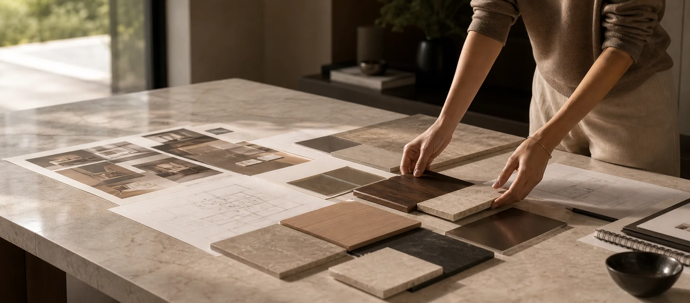
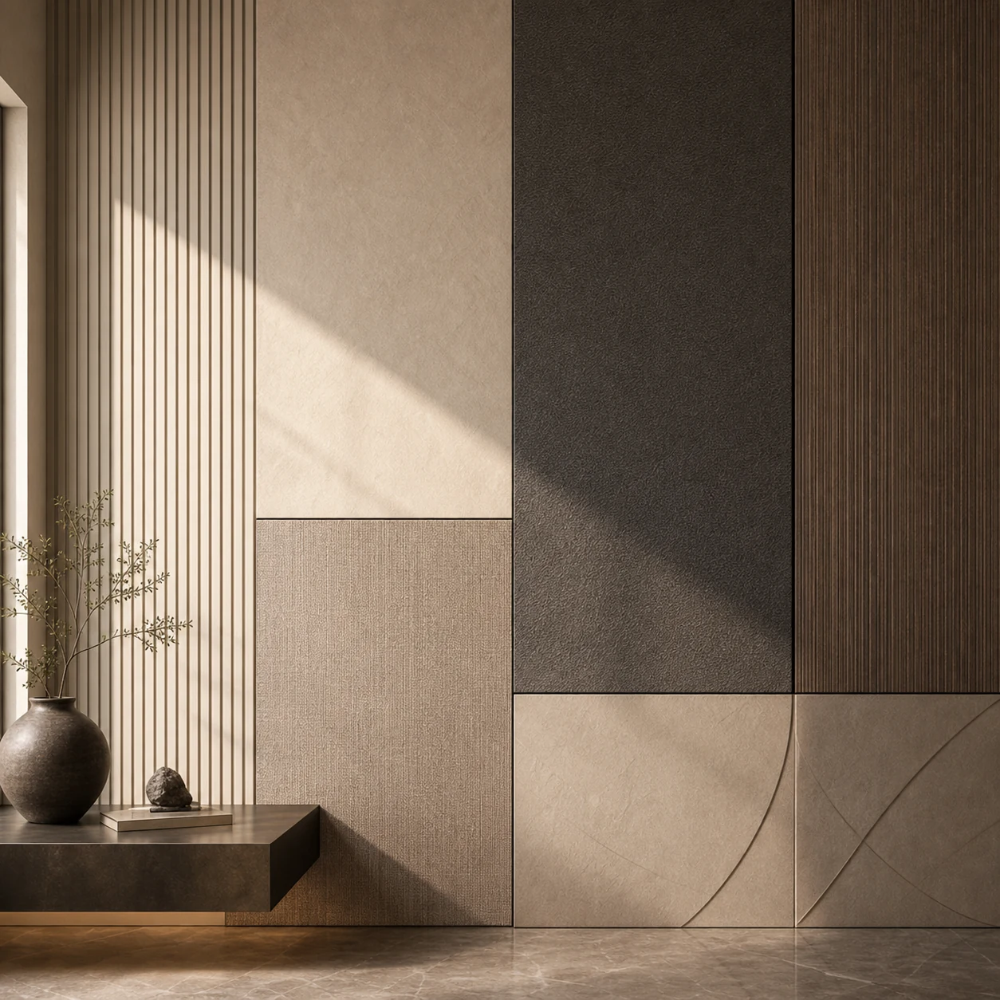
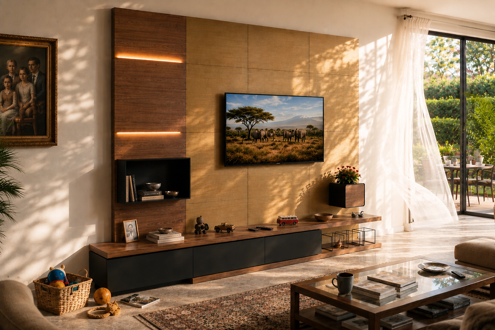
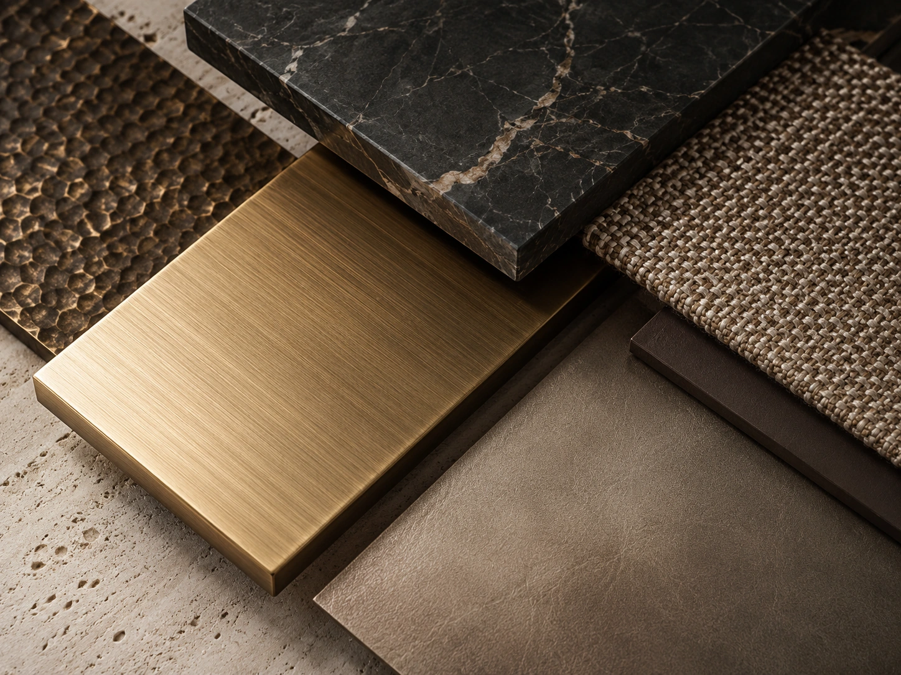
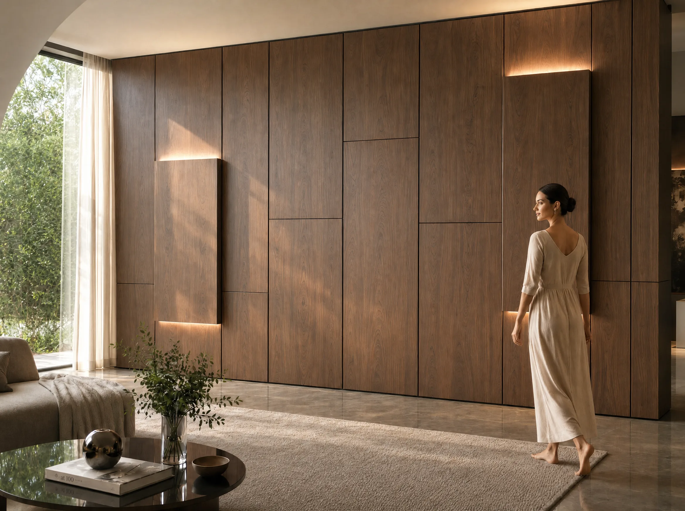

Prima del sistema,
c'è un modo di guardare gli interni.
IconicWall nasce da anni di lavoro reale sulle superfici: cantieri, hotel, retail, materiali tecnici, vincoli, tempi stretti e ambienti che devono cambiare senza essere demoliti.
Non nasce da un esercizio teorico. Nasce dal contatto diretto con spazi da trasformare, materiali da interpretare e soluzioni da rendere più semplici, più accessibili e più durevoli.

Dalla superficie
al sistema.
Prima di IconicWall c'è stato un lavoro quotidiano sulla trasformazione degli interni: pellicole architettoniche, finiture tecniche, arredi, pareti, camere d'hotel, spazi retail e ambienti professionali da riqualificare senza fermare tutto.
Nel tempo, la superficie ha smesso di essere solo il punto finale del progetto ed è diventata il punto di partenza per immaginare un sistema diverso.
La domanda.
Perché ogni intervento deve ricominciare da zero?
Da questa domanda nasce l'idea di separare ciò che deve restare da ciò che può cambiare: una struttura stabile, permanente e accessibile, capace di accogliere superfici, luce, accessori e funzioni aggiornabili nel tempo.

La struttura.
IconicWall nasce come infrastruttura permanente per interni. La struttura rimane installata, mentre superfici, materiali, luce, accessori e funzioni possono evolvere secondo le esigenze dello spazio.
Non una controparete. Non una boiserie tradizionale. Non un semplice rivestimento.
Una base progettuale pensata per accompagnare il cambiamento.


Da intuizione a
tecnologia proprietaria.
L'idea di separare ciò che resta da ciò che può cambiare è diventata un principio costruttivo riconosciuto: una struttura permanente, accessibile e aggiornabile, tutelata da brevetto italiano.
Scopri la tecnologia proprietaria →L'esperienza.
IconicWall nasce dal confronto con cantieri reali, materiali reali, tempi reali e ambienti che devono continuare a vivere.
La sua origine è pratica prima ancora che teorica: ridurre interventi invasivi, rendere accessibili le parti tecniche, semplificare manutenzione e aggiornamento, mantenendo continuità estetica e qualità percepita.


Una piattaforma
aperta.
IconicWall non è pensato come un prodotto chiuso. È una piattaforma che può dialogare con architetti, aziende, produttori, partner industriali e materiali diversi.
Il suo valore non è solo nella parete finita, ma nella possibilità di costruire una filiera capace di far evolvere gli interni nel tempo.
Una direzione chiara.
Dietro IconicWall c'è l'esperienza diretta di Yuri Meneghetti nella riqualificazione degli interni, nell'uso di materiali tecnici e nella ricerca di soluzioni non invasive per trasformare gli spazi.
Il progetto nasce da questa osservazione continua: gli ambienti cambiano, ma ogni trasformazione non dovrebbe obbligare a ricominciare da zero.
Vuoi capire da dove può partire il tuo progetto?
Raccontaci lo spazio, l'esigenza o la collaborazione che vuoi sviluppare.
Parliamone →